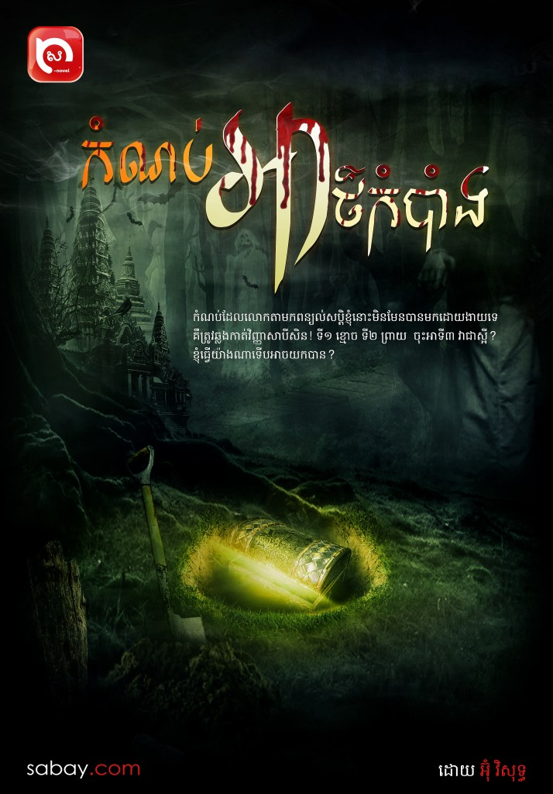

ទៅលេងស្រុក ស្រាប់តែខ្មោចតាពន្យល់សប្ដិឱ្យយកកំណប់
រឿងយល់សប្ដិកាន់តែហួសនិស្ស័យនឹងទុកចិត្តសម្រាប់មនុស្សសម័យបច្ចេកវិទ្យា ប៉ុន្តែអបិយជំនឿទាក់ទងនឹងការយល់សប្ដិនេះតែងតែកើតមានជាហូរហែ ដូចក្នុងរឿងមួយរបស់បុរសម្នាក់ជាអ្នកខេត្តកំពង់ចាម…
…ការធ្វើដំណើរផ្លូវដ៏ឆ្ងាយ ធ្វើឱ្យខ្ញុំអស់កម្លាំងយ៉ាងខ្លាំងចៀសមិនផុត។ ក្រោយពីហូបអាហារពេលយប់ជាមួយប៉ាម៉ាក់រួច ខ្ញុំនៅជជែកលេងជាមួយពួកគាត់មួយសន្ទុះ រួចខ្ញុំក៏រៀបចំចូលគេងពីក្បាលព្រលប់បន្តិច ប៉ុន្តែមុននឹងចូលគេង ខ្ញុំបានទៅអុជធូបដល់តាខ្ញុំដែលបានស្លាប់តាំងពីខ្ញុំនៅតូចកើតទើបតែបានមួយខួបពីរខួបម្ល៉េះ។
ខ្ញុំគេងលក់យ៉ាងឆ្ងាញ់តែម្ដង ប៉ុន្តែស្រាប់តែពាក់កណ្ដាលអធ្រាត្រ ខ្ញុំយល់សប្ដិចម្លែកមួយ។ ព្រលឹងខ្ញុំឃើញថា មនុស្សម្នាក់ឈរនៅចុងជើងខ្ញុំកំពុងគេង ហើយស្រែកហៅខ្ញុំ៖
«អាចៅ! ក្រោកឡើង!» ខ្ញុំបើកភ្នែកមកក៏ឃើញតាម្នាក់កំពុងញញឹមដាក់ខ្ញុំ ខ្ញុំក៏ងើបអង្គុយ។
«តា??? លោកតាមែនទេ? លោកតាមករកលេងខ្ញុំ មែនទេ?»
«តាមានរបស់មួយចង់ឱ្យចៅឯង!» គាត់តបទាំងមុខនៅញញឹមជាប់។

«របស់អីទៅលោកតា?» ខ្ញុំសួរទាំងឆ្ងល់។
«ជារបស់សំខាន់មួយដែលតាកប់ទុកចោលយូរហើយ ប៉ុន្តែចៅត្រូវចាំថា របស់កាន់តែល្អ កាន់តែពិបាកយក! ក្នុងសម័យសង្គ្រាម តាយកវាទៅកប់ដោយបញ្ចុះអ្នកការពារនៅជាមួយផង! ដូចនេះ ចៅមានសំណាងបានរបស់នោះ ឬអត់ អាស្រ័យលើចៅខ្លួនឯងហើយ!»
«អ្នកការពារអីទៅ?» ខ្ញុំព្យាយាមសួរបញ្ជាក់។
«តាមិនអាចប្រាប់បានទេបើសិនជាចៅខ្លាច រាថយ ឬរត់ត្រលប់ក្រោយ ចៅអាចមានគ្រោះថ្នាក់ដល់ជីវិត!»
«ត្រូវមានគ្រោះដល់ស្លាប់ផង?» ខ្ញុំសួរទាំងបារម្ភ។
«ត្រូវហើយ! ល្បែងមួយនេះគឺត្រូវយកជីវិតទៅភ្នាល់! តើចៅហ៊ានលេងដែរទេ?»
«ខ្ញុំហ៊ានលោកតា!!»
គាត់និយាយបន្តទៀតថា៖
«តាបានកប់លាក់របស់ស័ក្ដិសិទ្ធិជាច្រើនខាងជើងដើមជ្រៃក្បែរបច្ឆាវត្ត! ពេលចៅឯងដើរទៅដល់គល់ដើមជ្រៃនោះ ចៅឯងដើរទៅទិសខាងឆ្វេង៧ជំហាន ចៅនឹងឃើញថ្ម៣ដុំតម្រៀបគ្នាជាមុំចង្ក្រាន! ចូរចៅជីកចន្លោះកណ្ដាលដុំថ្មនោះយកចុះ ប៉ុន្តែត្រូវចាំជានិច្ចថា ដាច់ខាតត្រូវតែក្លាហាន មិនតក់ស្លុត មិនថាជួបនឹងអ្វីក៏ដោយ! ជួបមនុស្សវាយមនុស្ស ជួបខ្មោចវាយខ្មោច ជួបព្រាយវាព្រាយ! ប្រសិនជាចៅឯងចាញ់ ចៅឯងអាចស្លាប់ ហើយក្លាយជាអ្នកយាមរបស់នៅបន្ត! ចៅឯងត្រូវតែចាំពាក្យតាប៉ុន្មានឃ្លាហ្នឹង កុំឱ្យភ្លេចឱ្យសោះ!!»
កំណប់អាថ៌កំបាំង2
ខ្ញុំចង់សួរតទៀត ប៉ុន្តែខ្ញុំភ្ញាក់ពីគេងទៅហើយ មេឃងងឹតស្លុប ខ្ញុំមើលម៉ោងទើបតែ១រំលងអធ្រាត្រប៉ុណ្ណោះ។ តើខ្ញុំពិតជាហ៊ានទៅមែនឬ? សំណួររាប់ពាន់ចាប់ផ្ដើមផុសពេញខួរក្បាលខ្ញុំ។ ថ្មើរនេះ នាទីនេះ ខ្ញុំដើរទៅទីស្មសានព្រោះតែយល់សប្ដិមួយ តើស័ក្ដិសមដែរឬអត់? តើវាជាការពិតដែរអត់? ពិតជាចម្លែកខ្លាំងណាស់…
ចង់ដឹងថាបុរសនោះទៅតាមការពន្យល់សប្ដិរបស់ជីតាឬអត់ សូមរង់ចាំអានរឿង «កំណប់អាថ៌កំបាំង» ដែលនឹងផ្សាយនៅថ្ងៃសុក្រសប្ដាហ៍ក្រោយ។